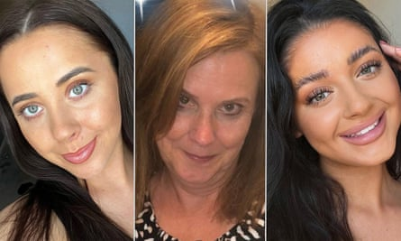
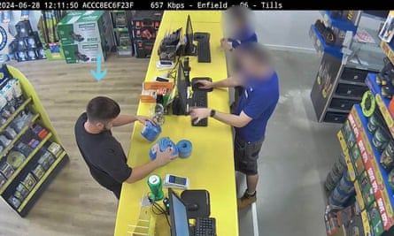

A former soldier has been found guilty of raping his ex-girlfriend before murdering her with a crossbow in a “final act of spite”.
Kyle Clifford, 26, shot dead Louise Hunt, 25, and her sister Hannah Hunt, 28, with a crossbow and fatally stabbed their mother, Carol Hunt, 61, during a four-hour attack at their home in Bushey, Hertfordshire , on 9 July last year. The women were the wife and daughters of the BBC racing commentator John Hunt.
Left to right: Hannah, Carol and Louise Hunt.Photograph: Facebook
Clifford began plotting to attack Louise two days after she ended their 18-month relationship because he was angry at being rejected. He was also angry at the Hunt family because he “correctly assumed” they had advised Louise to break up with him, Cambridge crown court heard.
In her closing speech to jurors, the prosecutor, Alison Morgan KC, said: “Louise was not going to be allowed by him to control the narrative. If he wanted Louise, he would have her, he would control her, he would rape her, and he would murder her and members of her family …
“If he could not have Louise Hunt then no one else was going to and he was going to take down her family with her. The family, he knew, did not support his relationship with her. He was angered, and that anger involved the planning of sexual violence as a means of acting out of spite in a final act before Louise Hunt’s death.”

The crossbow used by Kyle Clifford.Photograph: Hertfordshire Police/PA
Clifford, from Enfield, north London, refused to attend the trial before the judge Mr Justice Bennathan and did not give evidence. He admitted the triple murder, false imprisonment of Louise and two counts of possession of offensive weapons, namely an MX-405 crossbow and a 25cm knife, at an earlier hearing at Cambridge crown court on 22 January. He denied raping his former partner on the day of her death.
His barrister, Phil Bradley KC, told jurors on Tuesday that the defence case was that Clifford and Louise last had sexual intercourse on 23 June.
But on Thursday a jury of seven women and five men found him guilty after about 45 minutes of deliberations of raping Louise on 9 July. There was applause from the public gallery after the verdicts were returned.
The judge thanked the jurors and said he would sentence Clifford on Tuesday. He said: “Because of the murder convictions, the only sentence is life imprisonment.”
He told the jury the case was “dreadful” and he praised the Hunt family for their dignity and restraint. John Hunt sat next to his surviving daughter, Amy, 31, during the hearing.
Kyle Clifford bought a 30-metre (100ft) length of rope, a crossbow, an air pistol, a 25cm butcher’s knife and two cans of petrol.Photograph: Hertfordshire Police/PA
The trial heard that Clifford began researching murder weapons while also viewing pornography within days of the break-up on 26 June.
It can now be revealed that less than 24 hours before the attack he was searching the internet for podcasts by the misogynistic influencer Andrew Tate.
He bought a 30-metre (100ft) length of rope, a crossbow, an air pistol, a 25cm butcher’s knife and two cans of petrol. Clifford was captured on CCTV buying two rolls of duct tape, which he used to restrain Louise, binding her wrists behind her back, and her ankles.
Morgan told jurors: “It will be difficult for you to imagine what was going on in the mind of someone like Kyle Clifford. What was clearly going on was the marrying up of thoughts of extreme violence with sexual desire and fulfilment. His planning shows he planned a murderous act but also an act involving sexual violence.”
Clifford murdered Carol within two minutes of blagging his way into the family home at 2.39pm. He then waited for more than an hour for Louise to finish working in the garden before restraining, gagging and raping her. He murdered her more than two hours later shortly before shooting dead Hannah with the same crossbow when she returned home from work.
In legal argument, the prosecutor had said Clifford’s meticulously planned attack had involved the use of sex “as a weapon” against Louise. “The spite and slight that comes from him being mistreated, as he would see it, is what fuels the whole planning of these events and … sexualised violence is a part of that,” she said.
Police said the scale of Clifford’s crimes was “unprecedented” in terms of male violence against women and girls.
DCI Nick Gardner, from the Bedfordshire, Cambridgeshire and Hertfordshire major crime unit, said: “This was not a crime of passion, but a carefully planned assault.” He added that Clifford gave no comment during interviews with police, had shown no remorse and felt sorry only for himself.
He described Clifford’s failure to attend the trial as a “complete act of cowardice”. The judge made a number of attempts for him to be made available to the court, saying: “He could have dialled in via live link. He himself chose not to do any of that. He has put the family through the ordeal of a trial, he has created everything that has happened over this past week and the failure to show his face is completely cowardly.”
Clifford became the subject of a search for a number of hours before he was found injured in Lavender Hill cemetery in Enfield on 10 July 2024 after shooting himself in the chest with the crossbow. He is now paralysed from the chest down.
Lisa Kiff, a senior crown prosecutor, said: “Kyle Clifford is a murderer and a rapist who carried out a savage act of violence against three women.
“His crimes are among the very worst I have encountered in my career, and he now rightly faces a life sentence behind bars.”